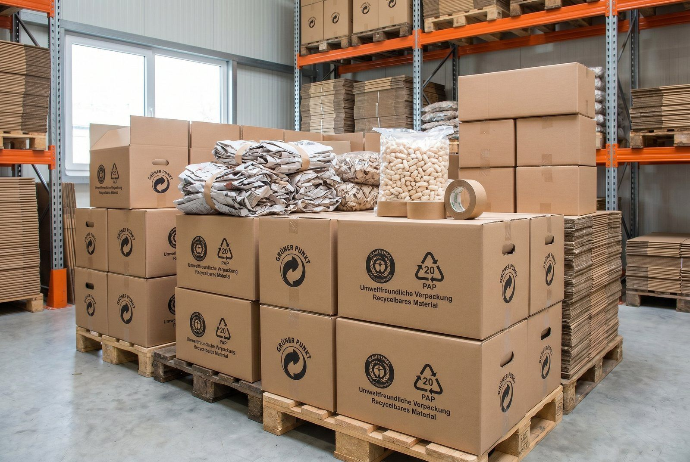

Sender du pakker med emballage til tyske forbrugere? Så er du forpligtet til at registrere dig i LUCID, det tyske emballageregister. Manglende registrering betyder SALGSSTOP i Tyskland. Her er alt du behøver at vide.
Hvad er LUCID?
LUCID er det centrale register oprettet af Stiftung Zentrale Stelle Verpackungsregister i forbindelse med den tyske Verpackungsgesetz (emballagelov), der trådte i kraft 1. januar 2019. Loven forpligter alle virksomheder, uanset størrelse og uanset hjemland, der bringer emballerede varer i omløb på det tyske marked til:
- Registrere sig i LUCID-registret
- Deltage i et dualt system (betale for genanvendelse af emballage)
SALGSSTOP ved manglende registrering
Dette er ikke en administrativ anbefaling, det er lovkrav med reelle konsekvenser:
- Tyske onlinemarkedspladser (Amazon.de, Zalando, bol.com DE m.fl.) er forpligtet til at fjerne produkter fra sælgere uden gyldig LUCID-registrering
- Konkurrenter kan indklage dig til tyske forbrugerorganisationer og myndighederne
- Bøder på op til 200.000 EUR ved overtrædelse
- Tilbagekaldelse af salgsrettigheder på tyske platforme
👉 Har du samme udfordring? Se hvordan SmartPack løser det i praksis
Hvem er forpligtet?
Du er forpligtet til LUCID-registrering, hvis du:
- Sender fysiske varer i emballage til tyske forbrugere (B2C)
- Sender varer til tyske erhvervskunder der ikke selv er registreret i et dualt system
- Sælger via tyske markedspladser uanset virksomhedens hjemland
Vigtigt: Kravet gælder uanset om din virksomhed er dansk, svensk, britisk eller fra et land uden for EU. Det er leveringsadressen, ikke afsenderadressen, der afgør forpligtelsen.
Hvad tæller som emballage?
- Ydreemballage (karton, pose, mailer)
- Fyldemateriale (bobleindpakning, papir, chips)
- Sikringselementer (tape, stræk-film)
- Indre emballage (plastikpose om produktet, papirkasse inden i en kasse)
Step-by-step: LUCID-registrering
Trin 1: Opret bruger på LUCID-portalen
- Gå til lucid.verpackungsregister.org
- Klik “Registrierung” (registrering)
- Vælg “Hersteller” (producent/importør)
- Udfyld virksomhedsoplysninger: firmanavn og adresse, CVR/VAT-nummer, kontaktperson, land (vælg Danmark/DK)
- Bekræft via e-mail
Trin 2: Tildeling af LUCID-nummer
Når registreringen er godkendt, modtager du et LUCID-registreringsnummer (format: DE-XXXXXXXXXX-XXXXXXXXXXXX-X). Gem dette nummer, du skal bruge det på din tyske webshop-side, over for tyske markedspladser og i kommunikation med dine duale systemudbydere.
Trin 3: Tilmeld dig et dualt system
Registreringen i LUCID er ikke nok alene. Du skal også deltage i et dualt system.
Godkendte duale systemer i Tyskland inkluderer:
- Der Grüne Punkt (DGP)
- Landbell
- Reclay
- Interseroh
- Zentek
Pris: Afhænger af mængden og typen af emballage. For en lille webshop med fx 5 kg plastikemballage og 20 kg karton pr. år er prisen typisk 50-200 EUR/år.
Trin 4: Anmeld dit duale system i LUCID
- Log ind på lucid.verpackungsregister.org
- Under “Systemteilnahme” (systemdeltagelse), tilføj dit duale system
- Bekræft de emballagebmængder du har licenseret
Trin 5: Løbende rapportering
Årligt skal du:
- Indberette faktiske emballagebmængder til dit duale system (typisk pr. 15. maj for foregående år)
- Opdatere LUCID hvis din virksomhed ændres (navn, adresse, emballagebmængder)
- Forny systemdeltagelse, de fleste duale systemer kræver årlig fornyelse
Emballagebmængder: Sådan estimerer du
| Materiale | Eksempel | Typisk vægt |
|---|---|---|
| Karton/pap | Papkasser, kartonmailers | 200-400 g/stk |
| Plastik | Plastikposer, luftpuder | 20-80 g/stk |
| Papir | Indpakningspapir, vævsepapir | 30-100 g/stk |
Typiske fejl
- Registrerer sig men glemmer det duale system: Begge dele er obligatoriske
- Bruger én registrering til flere virksomheder: Hver juridisk enhed skal registreres separat
- Glemmer at opdatere mængder: Anmeldte mængder skal matche faktisk brug
- Tror det kun gælder fysiske butikker: Onlinesalg til tyske forbrugere er fuldt dækket
Brug denne artikel
- ✓ Registrér din virksomhed på lucid.verpackungsregister.org
- ✓ Vælg og tilmeld dig et godkendt dualt system (fx Der Grüne Punkt)
- ✓ Link det duale system til din LUCID-registrering
- ✓ Sæt kalenderreminder for årlig emballage-indberetning (typisk maj)